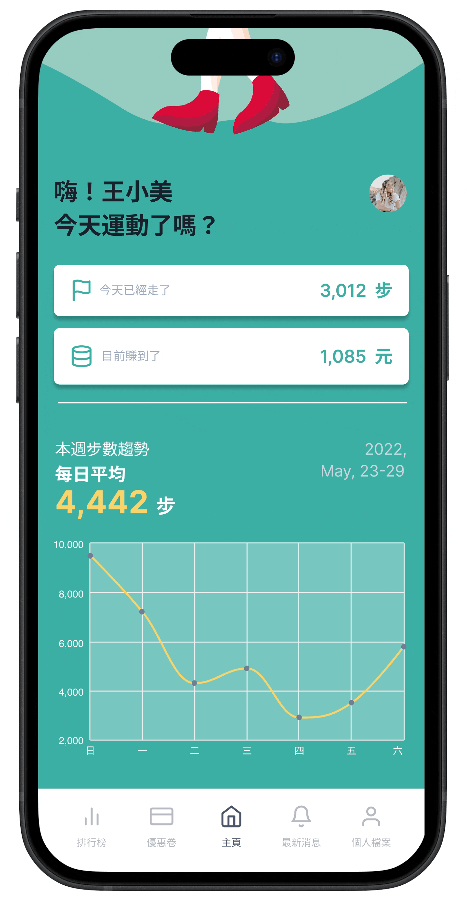
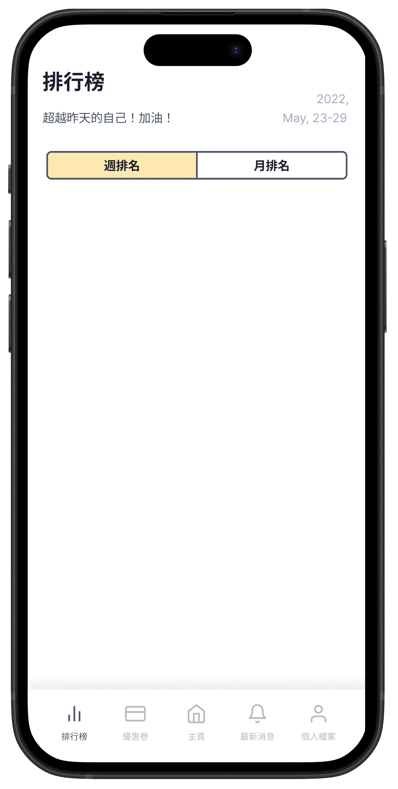

Walk to Win is a behavior-driven mobility concept that encourages residents and students in Longtan to walk short trips instead of relying on motorcycles. By combining step tracking with local discounts, the app turns everyday walking into a practical, rewarding habit.
Field observations around Longtan Road during peak meal hours showed that many students and residents defaulted to motorcycles, even for walkable distances.
High concentration of motorcycles during school and meal rushes.
Tight parking and crowded sidewalks at key stretches.
Poor air quality and lower pedestrian safety at crossings.
Longtan Walker turns steps into redeemable value. Users walk, earn a virtual currency, and redeem rewards at local stores—aligning personal health with neighborhood impact.
Surveys and interviews revealed that distance wasn’t the barrier. The real issue was a lack of immediate incentive, while local businesses clearly wanted more foot traffic.
This insight shaped three core features that connect walking behavior with social motivation and local rewards.


The incentive: Stores along Longtan Road offer exclusive discounts on food and beverages.
The payoff: Users redeem products using accumulated step value, directly driving foot traffic to local storefronts.
Reduced short-distance vehicle trips on Longtan Road by offering a clear alternative: walk instead of ride.
Translated abstract issues—parking, air quality, congestion—into a concrete loop: Walk → Earn → Spend Locally.
A city where health and local economy reinforce each other: better mobility habits that are good for both people and the neighborhood.